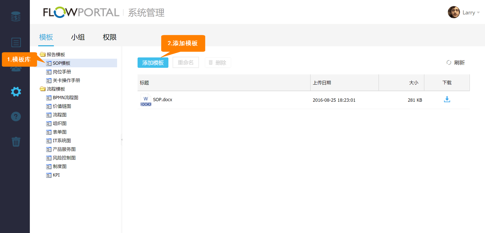
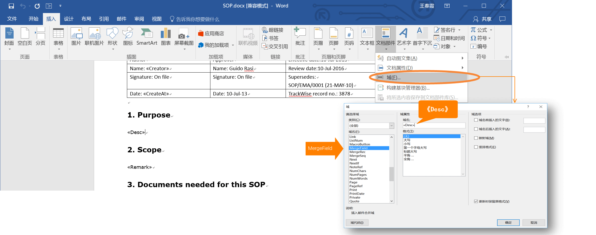
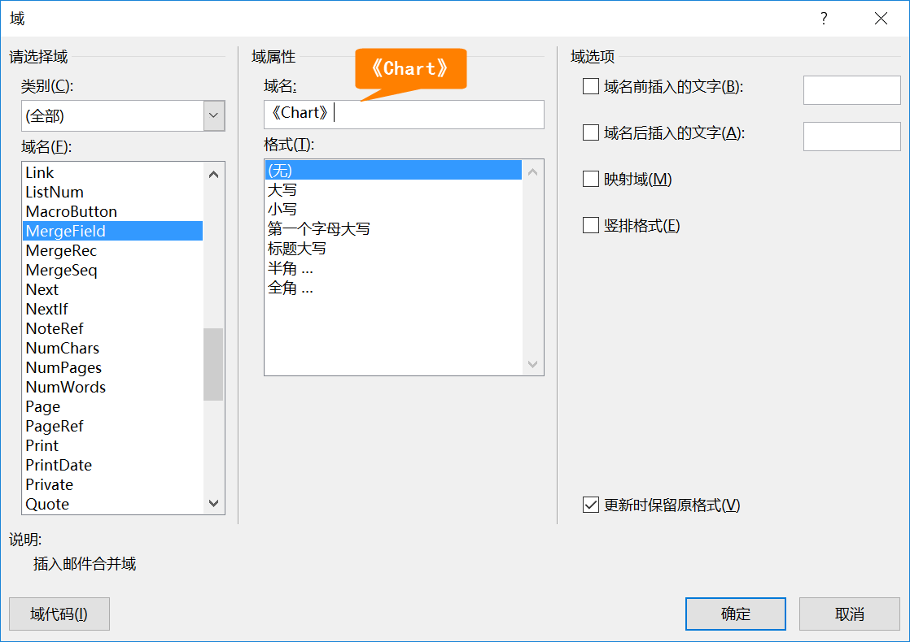
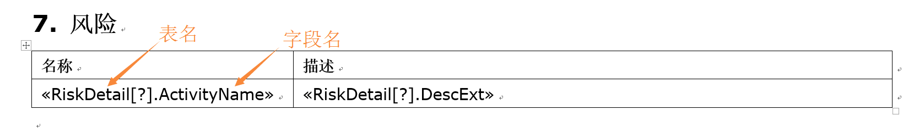
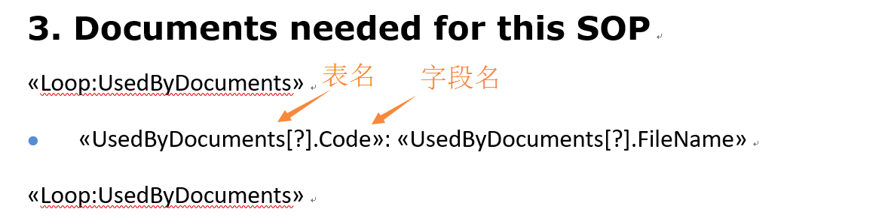

16.1 报告模板
进入【系统管理】模块，【报告模板】界面，就能在相应的模板库中添加、删除模板，如下图所示：

自定义报告模板-使用全局变量
在报告模板中，在上方工具栏中选择插入-文档部件-域，在弹出的域窗口中选择域为MergeField，然后您可以通过填写不同的域名来插入相应的报告内容了。
如下图中填写域名为«Desc»，则插入流程说明:

插入流程图
在文档中插入名为《Chart》的全局变量

插入明细表
依照使用全局变量的方法，在文档中插入如下全局变量

插入循环列表
依照使用全局变量的方法，在文档中插入如下全局变量

Created with the Personal Edition of HelpNDoc: Full-featured Help generator